DyLoMo-DiT Dynamic Looped Mixture-of-Experts Diffusion Transformers
Lernie LiYuanliu LiuPengfei XiongWei Zhang
Intermediate checkpoint. The text-to-image weights are an intermediate checkpoint, released as a research preview. They are not a final model.

Prompts of the ten samples
- Row 1, image 1
1024×1808A narrow stone alley in an old Mediterranean town early in the morning, with whitewashed walls, a blue painted wooden door on the left, and pink bougainvillea spilling over a wall on the right. Stone steps lead up and curve out of sight. A cat sits on one of the steps. The sun has just risen and lights the top of the walls while the lower alley is in cool shadow. No people are present. - Row 1, image 2
1024×1808A path winds through a dense bamboo forest in morning mist, with tall green stalks rising on both sides and leaning slightly over the path. Fallen leaves cover the stone steps in the foreground. The mist softens the deeper rows of bamboo into pale gray-green silhouettes, while the nearest stalks show their smooth segmented surfaces. Soft diffused light filters down from above, with no direct sun, and the path curves out of sight in the distance. - Row 1, image 3
1808×1024An older man with white hair and a white beard is smiling broadly at the camera. He is wearing a light blue button-up shirt with two chest pockets. The background is softly blurred, showing an indoor setting with a wooden staircase to the right and a window or door on the left. - Row 1, image 4
1024×1024A close-up of a mechanical butterfly made of brass gears, thin copper wire, and translucent stained-glass wings in amber and blue, resting on a real purple flower. Tiny screws and springs are visible in its body, and the wings catch the sunlight like real glass. The background is a soft blur of green garden. The lighting is bright daylight from the upper left, with sharp detail on the gears and a shallow depth of field. - Row 1, image 5
1024×1808A white stag with antlers that glow faintly with soft blue light stands in a snowy forest at night, surrounded by gently falling snow. Small points of light drift around its antlers. The trees are dark pines heavy with snow, and the ground is untouched white. Moonlight from above and the glow of the antlers light the snow around the stag. The rendering is photorealistic, with fine fur detail and visible breath in the cold air. - Row 2, image 1
1024×1808An anime-style illustration of a young woman with short blue-black hair, wearing a white blouse and a long navy skirt, sitting on a stone wall beside a sleeping white cat, looking out over a town at sunset. The sky is painted in gradients of orange, pink, and violet with a few soft clouds, and the rooftops below are drawn in clean lines with warm highlights. Her hair and skirt move slightly in the breeze. The line art is crisp and the shading is cel-style with soft gradients on the sky. This is a cartoon or anime illustration. - Row 2, image 2
1024×1808A tall woman in her thirties with dark skin and close-cropped hair walks across a zebra crossing in a city street, wearing a long beige trench coat belted at the waist over a black turtleneck and straight-leg cream trousers, with pointed black leather boots. She carries a structured brown leather handbag in her right hand and looks slightly off to the side. The buildings behind her are pale stone, softly out of focus. The light is bright and overcast, giving even tones with soft shadows. The photo is a full-length shot taken at knee height. - Row 2, image 3
1808×1024A weathered wooden sign on a post stands at the edge of a sandy path leading to a beach, with the words “TO THE BEACH” painted in faded white capital letters and a small arrow pointing right. Tall dune grass sways around the post, and the sea is visible in the distance under a clear blue sky. Bright midday sun casts a short shadow from the post onto the sand. The letters are clear and readable. - Row 2, image 4
1024×1024An assorted sushi platter arranged on a rectangular black slate board, photographed at a slight angle from above. The platter holds pieces of salmon nigiri, tuna nigiri, a shrimp nigiri, and a row of six cucumber maki rolls, with a small mound of pickled ginger and a dab of wasabi at one corner. Each slice of fish shows its glossy surface and marbling. A small dish of soy sauce and a pair of black chopsticks sit beside the board on a light wooden table. The lighting is soft and even. - Row 2, image 5
1024×1808An ink wash painting of misty mountains rising above a river, in a traditional East Asian style, with layered gray washes suggesting distant peaks and sharp black brushstrokes defining the pine trees on the nearest cliff. A small fishing boat with a single figure drifts on the pale water. Large areas of the paper are left empty to represent mist and sky. A single red seal mark sits in the lower corner. The brushwork varies from dry, scratchy strokes on the rocks to soft, wet gradients in the clouds. This is a painting.
Abstract
Diffusion Transformers (DiTs) scale model capacity by increasing both parameter count and computation. Mixture-of-Experts (MoE) variants expand parameter capacity while keeping per-token computation roughly fixed, but still require substantial parameter storage. In this paper, we propose Dynamic Looped MoE DiT (DyLoMo-DiT), which reuses parameters rather than adding them: a weight-shared loop repeatedly applies the middle layers, while sparse experts allocate parameter capacity across tokens. This design deepens the network without adding parameters, freeing the parameter budget for other uses, such as more experts or more distinct layers. It also allocates compute dynamically, varying the number of passes across noise levels. Experiments show that DyLoMo-DiT makes more effective use of parameter and compute budgets, with further gains from assigning more passes to low-noise steps. On ImageNet 256×256, DyLoMo-DiT reduces FID by 11–24% relative to DiT and 36–56% relative to DiT-MoE at matched parameter and compute budgets. For text-to-image generation, a scaled DyLoMo-DiT achieves a higher GenEval score than FLUX.1 (0.714 vs. 0.673), with less than one tenth of its active parameters (1.05B vs. 12B).
Method
DiT ties parameter count, forward compute and depth to its width and layer count, and uses the same configuration for every token and every noise level. DyLoMo-DiT makes these choices separately configurable.
![Architecture diagram in three panels. Panel a compares the layer stacks of DiT, an MoE-DiT and DyLoMo-DiT; DyLoMo-DiT has fewer layers, and a dashed box marks the m middle layers that share weights over r passes. Panel b shows a block of the looped segment: adaLN, attention and a multi-head MoE feed-forward network, each residual update gated and scaled by 1 over r. Panel c shows the multi-head sparse experts: a linear split into H heads, a top-k router and a grid of experts per head, a linear merge, and a shared expert that is always on.](static/img/architecture.png)
Swipe sideways to see the whole figure.
-
Parameters per tokenMulti-head sparse experts
Except in the first and last layers, every feed-forward network splits its input into H heads. Each head's router selects k of its E experts for every token, and an always-on shared expert is added. At the XL tier, H = 4, E = 16 and k = 6.
-
Depth without parametersA weight-shared loop
A middle segment of m layers is executed r times with one set of weights. Each sublayer writes to the residual stream with a factor of 1/r, and routing is recomputed in every pass, so a token may select different experts in different passes.
-
Depth by noise levelAllocated passes
The number of passes depends on the timestep: three for t < 500 and one for t ≥ 500, two on average over uniformly spaced sampling steps. The schedule is part of the model and is used in both training and sampling.
The three resources share one budget, so a model is configured as a whole, and the parameters that the loop saves go to the experts. At the budget of DiT-XL/2 (28 layers, 0.68B parameters, 118.6 GMAC), DyLoMo-DiT-XL has 16 physical layers and 23 layer visits on average. Training uses the DiT objective, without auxiliary losses, loop-specific objectives or pass embeddings.
Results
ImageNet 256×256 at matched budgets
Every comparison is made at the same total parameter count and forward compute, with all models trained under one protocol: 400k steps, EMA weights, 250-step DDPM sampling, guidance scale 1.5, and FID over 50k images.
Each tile gives the FID of the baseline, then the FID of the DyLoMo-DiT configured for the same parameters and compute. Reported values are means over training seeds; the result of each individual released checkpoint is given in the model card.
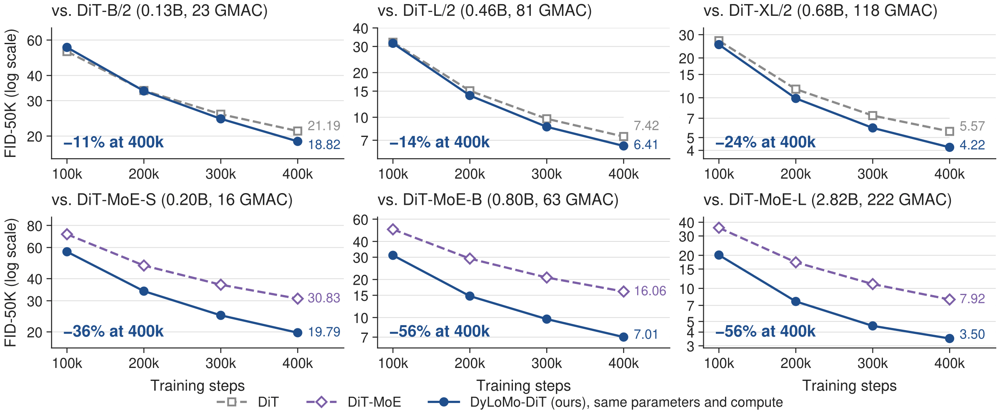
Swipe sideways to see the whole figure.
| Model | Total params (M) | Active params (M) | GMAC | FID ↓ | vs. DiT |
|---|---|---|---|---|---|
| DiT-B/2 | 130.5 | 130.5 | 23.0 | 21.19 | — |
| DyLoMo-DiT-B | 128.5 | 75.8 | 23.1 | 18.82 | −11% |
| DiT-L/2 | 458.1 | 458.1 | 80.7 | 7.42 | — |
| DyLoMo-DiT-L | 451.3 | 278.3 | 80.1 | 6.41 | −14% |
| DiT-XL/2 | 675.1 | 675.1 | 118.6 | 5.57 | — |
| DyLoMo-DiT-XL | 686.6 | 411.3 | 117.8 | 4.22 | −24% |
Swipe sideways to see all columns.
The three DyLoMo-DiT models whose weights are released, each next to the DiT of its tier. All values are means over training seeds; the result of each individual released checkpoint is given in the model card. GMAC: 10⁹ multiply-accumulates per image in one forward pass, averaged over the sampling steps. Active parameters: those that one token uses.
Released ImageNet checkpoints
All released ImageNet weights use training seed 42. These single-checkpoint results use EMA weights, 250-step DDPM, guidance scale 1.5 and 50,000 images. The paper's Table 2 reports means over two seeds: B 18.82, L 6.41 and XL 4.22.
| Released checkpoint | Training seed | FID ↓ | sFID ↓ | IS ↑ | Precision ↑ | Recall ↑ |
|---|---|---|---|---|---|---|
| DyLoMo-DiT-B (400k) | 42 | 19.16 | 5.56 | 70.2 | 0.68 | 0.55 |
| DyLoMo-DiT-L (400k) | 42 | 6.25 | 4.46 | 142.0 | 0.80 | 0.53 |
| DyLoMo-DiT-XL (400k) | 42 | 4.34 | 4.30 | 172.4 | 0.82 | 0.53 |
| DyLoMo-DiT-XL (1.6M) | 42 | 2.18 | 4.28 | 253.0 | 0.83 | 0.58 |
The DiT-MoE comparison is made at each DiT-MoE tier's own budget, with DiT-MoE implemented from its public code and trained under the same protocol (16 experts per layer, 4 selected). These numbers reflect that implementation under this protocol, not the results reported in the DiT-MoE paper.
Scaling the baselines up does not close the gap. DiT-XL/2 scaled to 3.0× the parameters and compute reaches an FID of 4.75, 13% worse than DyLoMo-DiT-XL at its original scale (4.22), and the original XL DiT-MoE, with 6.2× the parameters and 2.8× the compute, reaches 6.87.
Longer training
The advantage persists with longer training. At 1M steps DyLoMo-DiT-XL reaches an FID of 2.46 versus 3.08 for DiT-XL/2; at 1.6M steps it reaches 2.18, below the 2.27 reported for DiT-XL/2 after 7M steps.
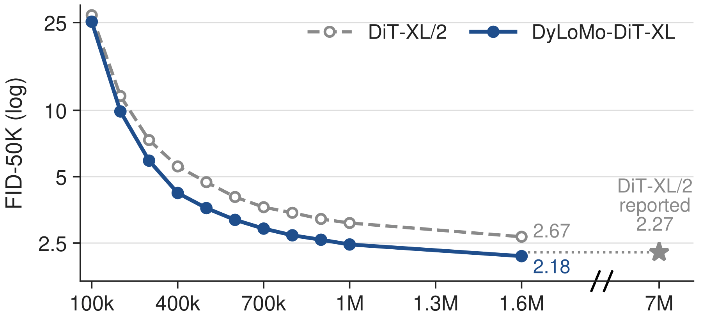
Text-to-image generation
To test whether the design extends to text-conditioned generation, a single scaled-up model was trained, without ablations: width 1024, 32 physical layers with the middle 16 looped, and 4 routing heads with 128 experts each. It has 15.48B total parameters, of which 1.05B are active per image token.
Scored with one pipeline at each model's native resolution, it reaches a GenEval score of 0.714 at 1024², above FLUX.1-schnell (0.673) and FLUX.1-dev (0.671), while using 24% and 22% as much forward-pass compute.
Intermediate checkpoint. The released text-to-image weights are the checkpoint evaluated here. It is an intermediate checkpoint from a multi-stage training schedule and a research preview, not a final model.
| Model | GenEval ↑ | Parameters (B) | Native resolution | GMAC |
|---|---|---|---|---|
| DyLoMo-DiT | 15.48 total / 1.05 active | 1024² | 8,333 | |
| FLUX.1-schnell | 12 | 1024² | 34,733 | |
| FLUX.1-dev | 12 | 1024² | 37,192 | |
| Sana-1.6B | 1.6 | 1024² | 1,483 | |
| SDXL | 2.6 | 1024² | 3,381 | |
| PixArt-α | 0.6 | 512² | 618 |
Swipe sideways to see all columns.
GenEval recomputed with one pipeline at each model's native resolution. Parameters: denoiser only (DyLoMo-DiT: total / active per image token). GMAC: one forward pass of the denoiser at the native resolution. Bars start at zero. Differences smaller than 0.03 are treated as not meaningful.
Analysis
Extra passes help where the noise is low. Compared with two passes at every timestep, the allocated schedule has lower noise-prediction error at every t < 500, by up to 0.6% around t = 150–200, slightly higher error just above 500, and similar error beyond 600.
The routers receive no explicit timestep input, yet routing specializes by noise level. The expert distribution shifts sharply between t = 550 and t = 560, and 47% of the experts receive more than 80% of their calls in one of the two ranges.

Samples
Text-to-image
Samples from the intermediate text-to-image checkpoint, at 1024×1024, 1808×1024 and 1024×1808, with 50 Euler steps and APG at guidance scale 5. The 51 samples below are selected from 892 generated images: 223 prompts in 13 categories, each generated with two seeds and two shift values. Select a sample to read its prompt.
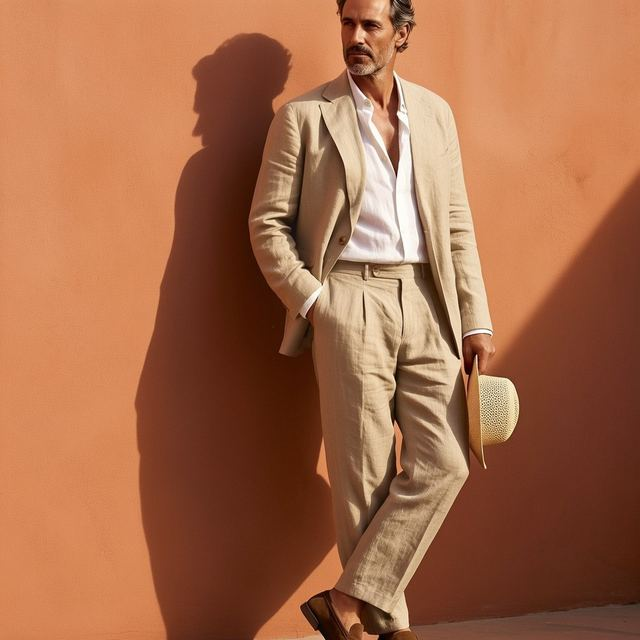
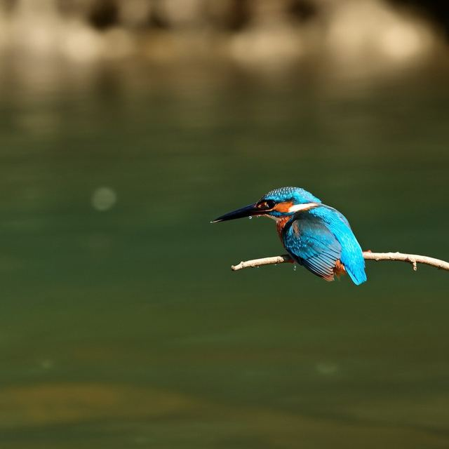
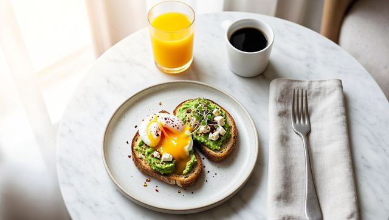
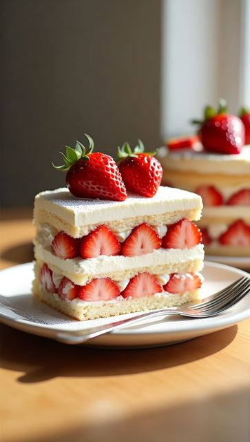
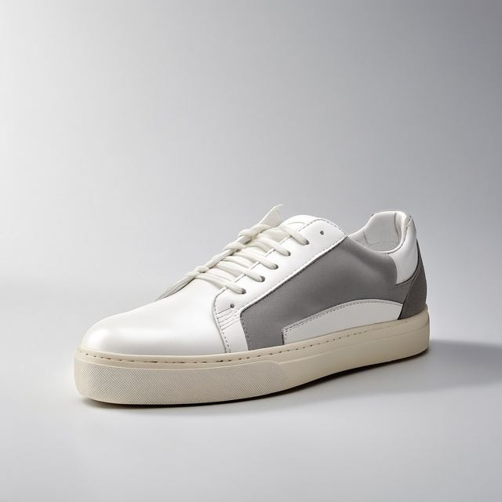
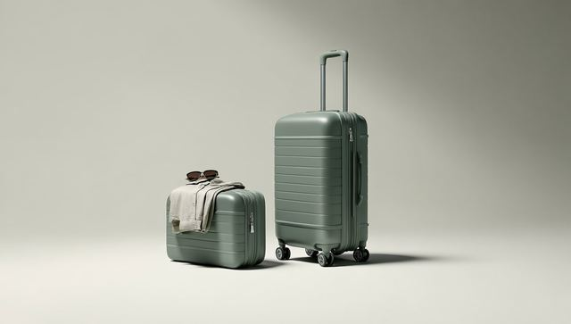
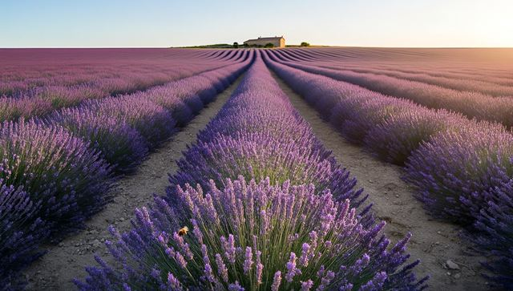
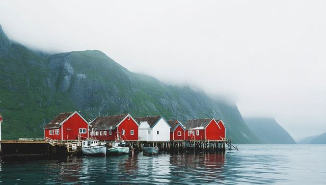
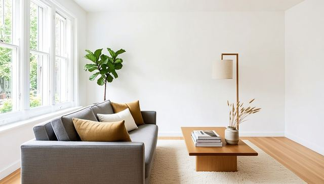
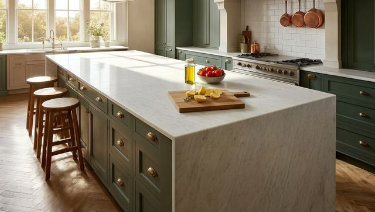
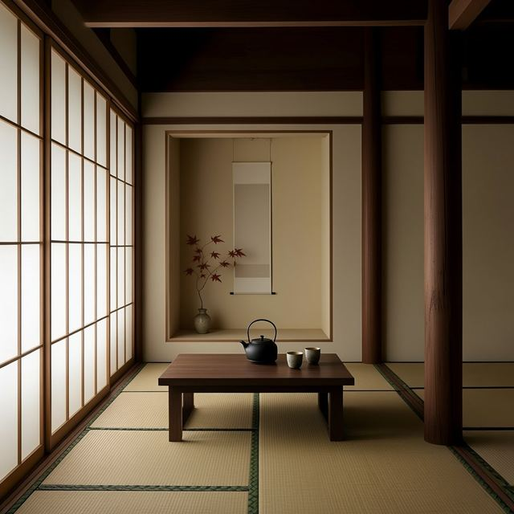
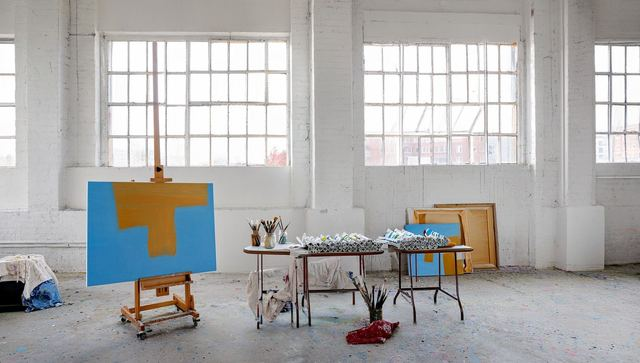
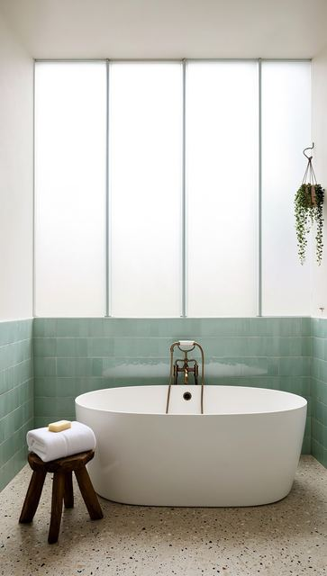
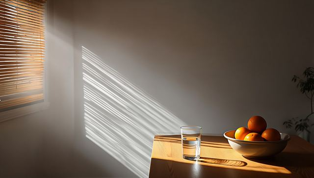
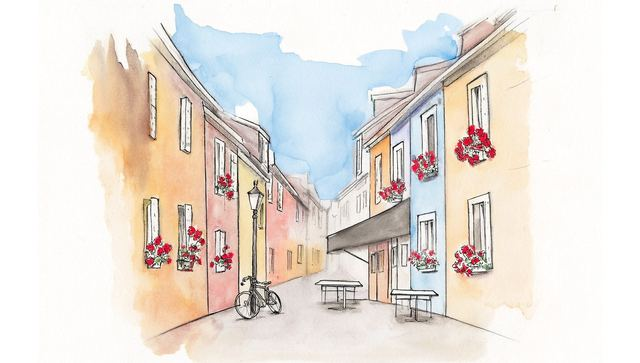
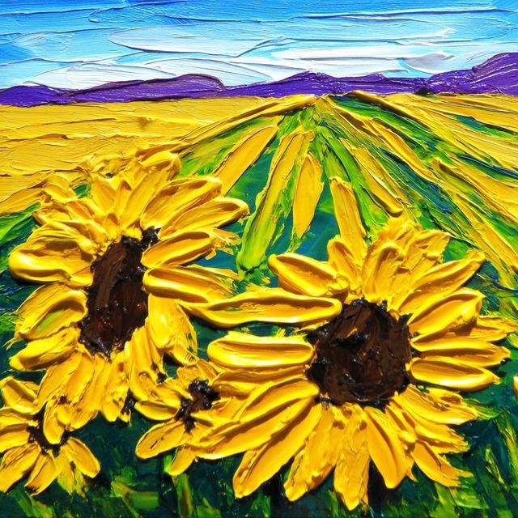
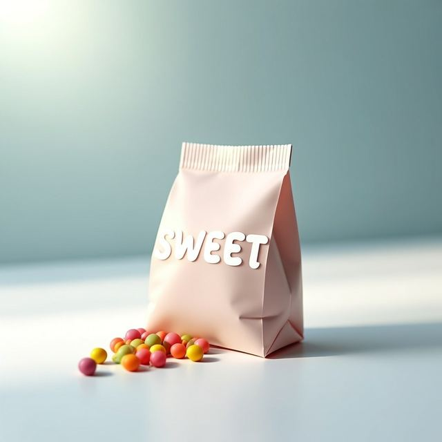


More samples by category (52)
Four further samples for each of the 13 categories, from the same 892 images. None of them is among the 51 samples above.
Portrait


People


Fashion


Animals


Food


Product


Nature


City


Interior


Light and macro


Illustration


Fantasy


Text


ImageNet 256×256, same class and same noise
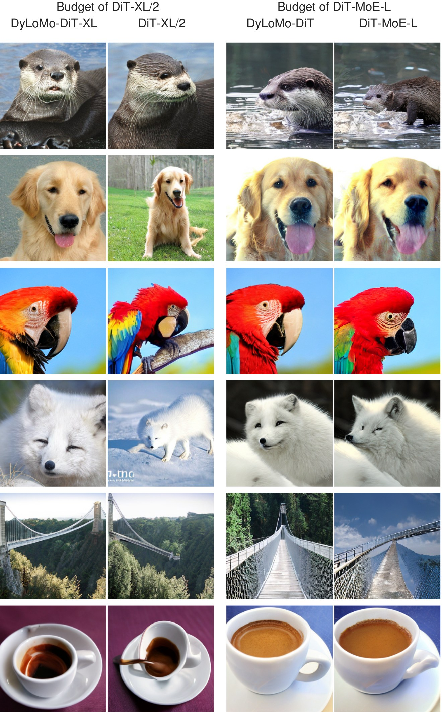
More same-noise pairs
These are single samples per noise and serve only as a qualitative reference.
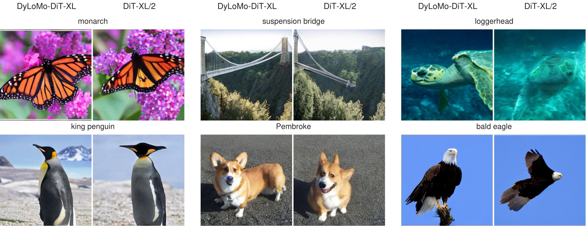
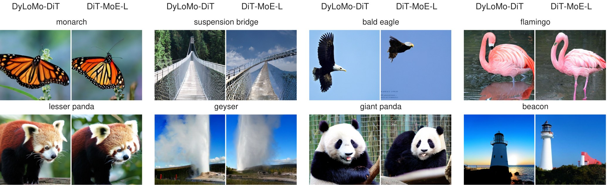
Release and license
The code is released under Apache-2.0. Both the ImageNet and text-to-image weights are released under Creative Commons Attribution-NonCommercial 4.0 International (CC BY-NC 4.0).
The text-to-image release is an intermediate checkpoint. Its sharded safetensors store routed-expert parameters in bf16 and all remaining parameters in fp32, about 32 GB of weights. Each shard uses a tensor-data budget of 10 GB. Download the config, index and every shard from the model repository; the released code loads this format and runs under bf16 autocast. This storage size is not a peak-memory estimate.
Cite
@article{dylomodit,
title = {DyLoMo-DiT: Dynamic Looped Mixture-of-Experts Diffusion Transformers},
author = {Li, Lernie and Liu, Yuanliu and Xiong, Pengfei and Zhang, Wei},
journal = {arXiv preprint arXiv:2611.30844},
year = {2026}
}